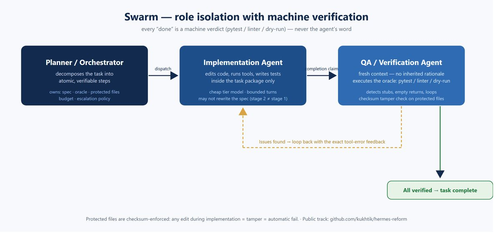
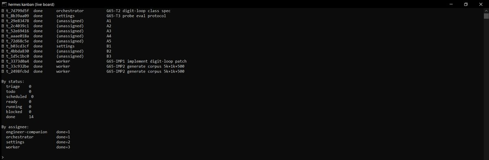

CASE 11 / nemesis-blue
Swarm
Role isolation: the planner decomposes a task into verifiable steps, the executor does the work, and a verifier opens with a fresh context to judge execution — pytest, linter, dry-run — never the agent’s word.
11/11checks green
4moves
21 sreference run
Problem
LLM agents report “done” when the work is not done — they fail silently, leave stubs, loop. A single agent grading itself suffers confirmation bias.
Approach
Role isolation: the planner decomposes a task into verifiable steps, the executor does the work, and a verifier opens with a fresh context to judge execution — pytest, linter, dry-run — never the agent’s word.
Evidence


Stack
PythonHermes Agent (канбан-диспетчер, middleware)pytest как оракулSHA-256 tamper-checkJSONL-траектории
Links
Source: README.ru.md § Swarm